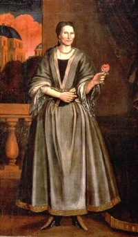

Ariaantie Coeymans Verplanck
 Ariaantie Coeymans was born in October 1672. She was the daughter of New Netherland pioneers Barent Pieterse and Geertruy De Vos Coeymans. She probably grew up on her father's farm south of Albany. By 1712, Barent Pieterse was dead leaving his children to share his sizable estate which included property in and around Albany.
Tradition holds that Ariaantie lived with her brother Samuel in a house the family had built on the stream that flowed into the Hudson at today's village of Coeymans. That landmark building is still standing and has been memorialized in painting and photography.
In July 1723, Ariaantie was in her early fifties married a much younger David Verplanck at the Albany Dutch church. The marriage produced no children. About that time, she was the subject of the now famous portrait shown on the right.
Samuel Coeymans married in 1724 and seems to have lived in the "Coeymans House" along with Ariaantie and her husband who also seems to have been Samuel's business partner. Perhaps, other siblings also lived on the property as well. The Bleecker map of 1767, fixes the homes of "Saml. Coiemans & Verplanks."
Possibly because of her material legacies, Ariaantie Coeymans Verplanck has become a legendary historical character. She was not a resident of the city of Albany. She seems to have resided mostly in the "Coeymans House."
However, Ariaantie lived for more than seventy years and died in April 1743. Her husband remarried, became somewhat more closely connected to the life of the city of Albany, and survived until the 1760s.
Oil painting attributed to Nehemiah Partridge and dated at the time of her marriage. In the collection of the Albany Institute of History and Art. Copied and adapted from an online posting.
{kind=link}